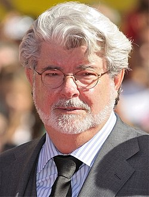

Sorozatok |
Könyvek |
Játékok |
Főoldal |
Vizsgái után vágóként, világosítóként és segédoperatőrként vállalt munkát. Tanársegédi állást kapott a főiskola operatőri szakán, ahol tanfolyamot szervezett. Szabadidejében elkezdett dolgozni egy új ötletén, melynek a THX 1138:4EB címet adta. Az osztálya egyik felével kezdett el rajta dolgozni. Úgy döntött marad az USC-n és diplomát szerez. Megkezdte a THX vágását, és más filmeken is dolgozott mellette. Készített egy dokumentumfilmet egy lemezlovasról, és több rövidfilmet is. Végül munkáit benevezte a Nemzeti Diák-Filmfesztiválra, a THX a fődíjat nyerte el, az A Császár és a 67.6.18 egyaránt különdíjas lett.
